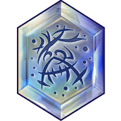
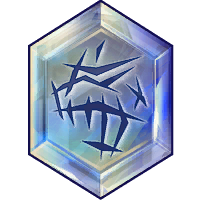

Abominable Snowman
Requirements
Trait: Frost, Death
Slot: Major
Statistics
Critical Strike: +2%
Ice Damage Bonus: +2%
Discipline
Powers Granted
Aura Of Terror
Increases your Perception by 10 and surrounds you with an aura fear, revealing
Stealthed enemies for 15 seconds.
Enemies who remain nearby are Suppressed and afflicted with Frostbite, causing
81 Ice damage seven times over 14 seconds.
Terrifying Features
Protects you with a powerful enchantment periodically stunning attackers.
This can only occur once every 24 seconds.
Banshee
Requirements
Trait: Plague, Death
Slot: Major
Statistics
Critical Damage: +5%
Damage Bonus: Enemy High Health +5%
Discipline
Powers Granted
Haunt
Cursus 5 enemies for up to 30 seconds or 5 hits, reflecting 35% of their damage and healing you for 35% of damage taken. The curse also reduces their Damage Bonus by 10% and Attack Power by 75 for 30 seconds.
Angel Of Death
Deals 20 more Damage to enemies with low health.
Black Mask
Requirements
Trait: Shadow, Death
Slot: Major
Statistics
Damage Bonus: Enemy High Health: +5%
Stealth: +15
Discipline
Powers Granted
Call Darkness
Causes all attacks to count as if performed from behind the target and increases your Power Damage Bonus: Behind by 15% for 20 seconds.
Study Target
Grants a Damage Bonus of 10 to abilities used in stealth and the first attack when exiting stealth against your target.
Blade Master
Requirements
Trait: War, Death
Slot: Major
Statistics
Armor Penetration: Slashing: +2%
Slashing Damage Bonus: +2%
Discipline
Powers Granted
Blood Strike
Attack multiple enemies up to three times for 72 damage.
On the third strike, they suffer a Bleed for a few seconds.
Blood Price
Extracts Blood Orbs from enemies as you perform melee attacks. Picking up
Blood orbs heals you for 92 damage and increases your Attack Power by 100
for 30 seconds.
Blood orbs can only spawn once every 5 seconds.
Blood Feeder
Requirements
Trait: Death
Slot: Major
Statistics
Critical Strike: +2%
Damage Bonus: Enemy High Health: +5%
Discipline
Powers Granted
Bite
Causes your target to suffer 136 damage and applies a Bleed to them.
Bleeding causes 64 Bleed damage every two seconds for 16 seconds.
Tasty
Grants a Lifesteal of 10 for 10 seconds when you attack a bleeding target.
This cannot trigger more than once every 15 seconds.
Grim Reaper
Requirements
Trait: Duelist, Plague, Death
Slot: Major
Statistics
Movement Speed Damage Bonus: +5%
Organic Resistance: +300
Discipline
Powers Granted
Shrivel
Inflicts Disease and Blackmantle on an enemy, absorbing up to 500 points of
Healing. Disease deals 128 Disease damage every two seconds for 10 seconds.
If Shrivel hits an Exposed enemy when attacking or using an ability, they are
knocked down and take bonus damage.
Ghost Army
Calls forth a Ghost Army in front of you dealing 90 damage, debuffs the target's Incoming Healing by 15% for 15 seconds and applies a Haunt buff for 15 seconds that heals 12.5% of the Damage dealt by Ghost Army when it expires.
Reality Warper
Requirements
Trait: Frost, Death
Slot: Major
Statistics
Anti-Critical Strike: +3%
Movement Speed Damage Bonus: +5%
Discipline
Powers Granted
Spiritual Decay
Decays the area within 8 meters around you every 3 seconds for 30 seconds, all targets hit have their Healing Bonus decreased by 25%.
Shrivel
Inflicts Disease and Blackmantle on an enemy, absorbing up to 500 points of
Healing. Disease deals 128 Disease damage every two seconds for 10 seconds.
If Shrivel hits an Exposed enemy when attacking or using an ability, they are
knocked down and take bonus damage.
Unholy Beast
Requirements
Trait: Death
Slot: Major
Statistics
Organic Resistance: +300
Physical Resistance: +300
Discipline
Powers Granted
Undead Fortitude
Grants immunity to Blackmantle effects.
Everlooming
Grants immunity to slow effects.